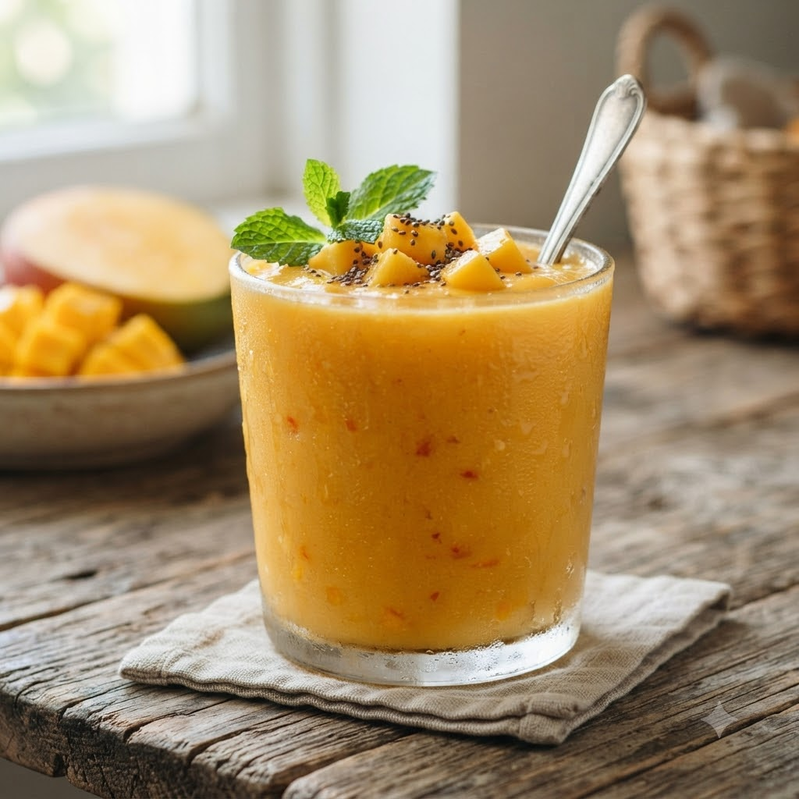

Fresh Mango Smoothie

Fresh Mango Smoothie
Chef Magic – Whisk/Blend — 2 min — Serves 2
Ingredients
- 1 cup ripe mango, chopped
- 1 cup milk or yogurt
- 1 tbsp honey (optional)
- 4 ice cubes
Method
1Add all ingredients to the jar.
2Select Whisk/Blend (Speed 8–10) and run until smooth and frothy.
3Pour into glasses and serve immediately.